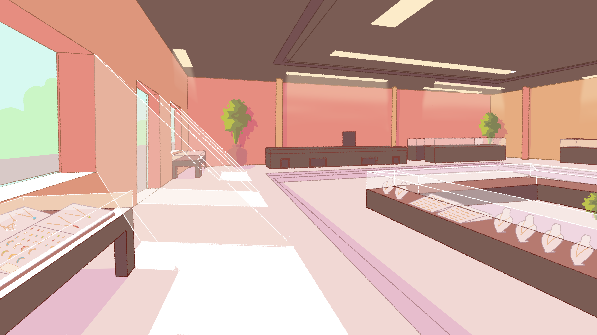
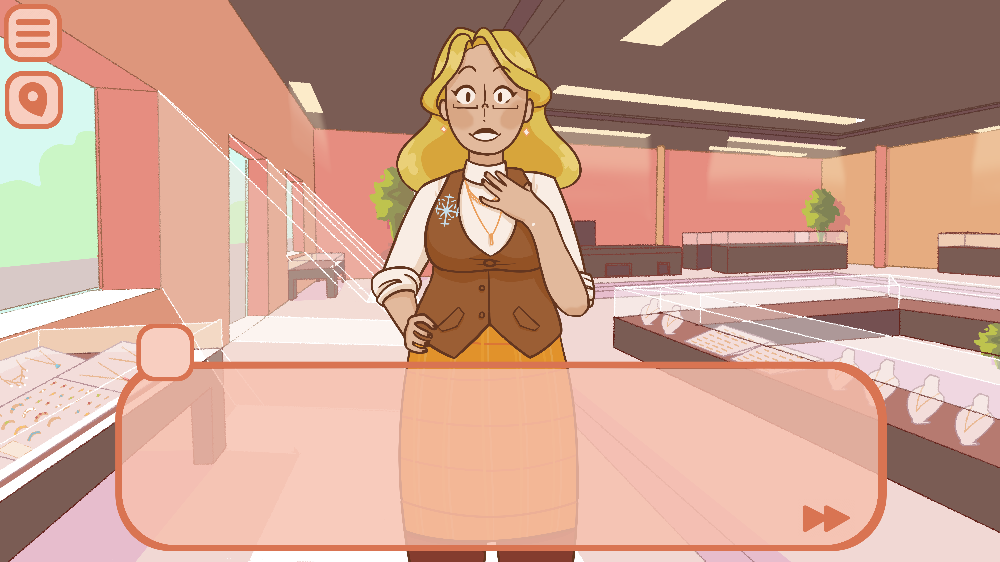
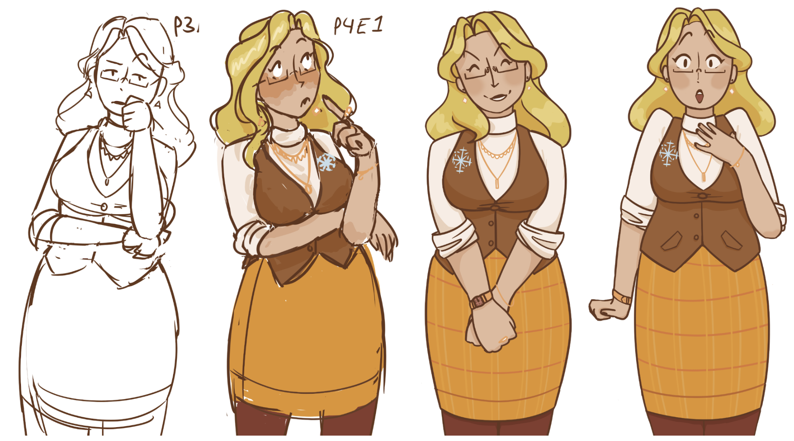
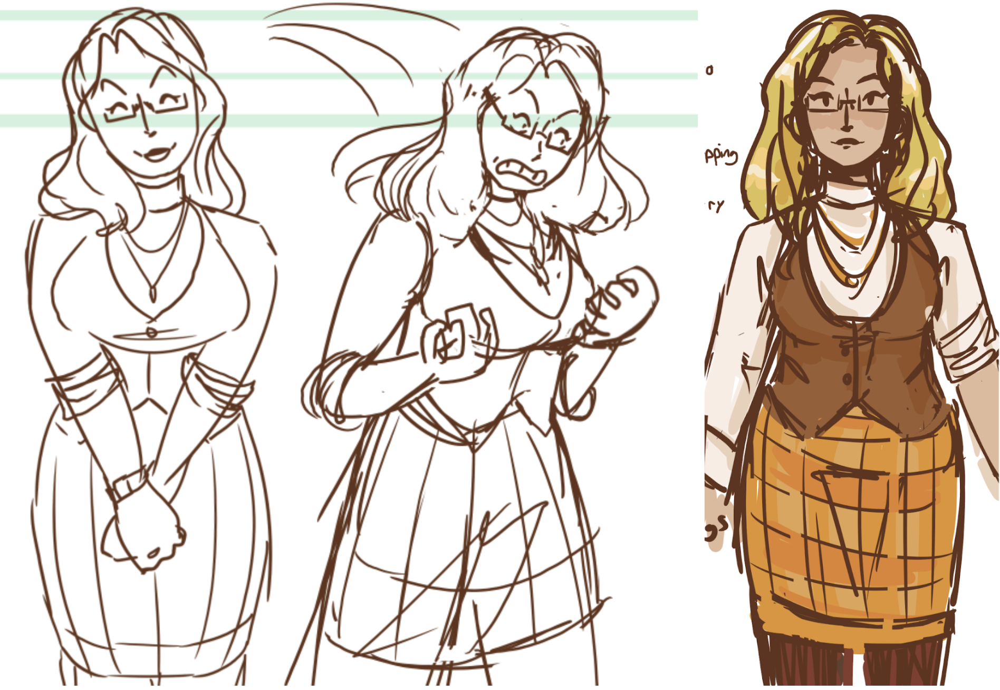

Soap Opera [Demo]
Made with Unity, Twine, Inkle, and Photoshop
Contributors:
Zionna Brown - Narrative design, character design, UI, writing, art
Neil Small - Music, sound effects
Introduction
Soap Opera is a comedic dating simulator where you date soaps come to life in a shopping mall! Apply to work at various shops at the mall for a chance to get to know your cute co-workers and become one of the team, invited to the company parties! A demo project that was fully developed but lacked the programming. As it was a duo project and we both got too busy, Soap Opera as a project has been put aside for now.
Cast of Characters

Golden Honey - She/Her - Jewelers
An uptight workaholic who values money and sales above all else.
Apple Crisp - He/Him - Candle Store
A laid-back and easygoing film student.
Toasted Oatmeal - He/Him - Florists/Café
A soft and sleepy plant enthusiast who values the comforts in life.
Royal Lavender - They/Them - Bookstore
A boisterous fantasy lover who easily gets swept up in their own imagination.
Pumpkin Spice - She/Her - Florists/Café
A sweet and loving photographer who is all about hugs and hot drinks.
Haight Ashbury - They/Them - Froyo Shop
A rude and unenthused skater who insists that they do work, they're just on a break. Again.
Fresh Laundry - She/Her - Laundromat
A shy and clumsy girl in a pile of laundry, hiding from the world around her.
Midnight Sun - He/Him - Janitor PRIVATE EYE
A curious man who is convinced there is something special at the mall.
Midday Moon - She/Her - Janitor PRIVATE EYE
A suspicious lady who is convinced there is something dark happening at the mall.
Demo Setting
We were very aware of how many characters, locations, and the large amount of gameplay we were planning. We decided to start small with a demo, limiting ourselves to two characters and one location. Additionally, we decided to submit our demo to a winter visual novel game jam where the theme was simply "winter." With that in mind, we got started picking which character should star in the demo, and what the main storyline should be. We settled on having the player try to impress Golden Honey, a workaholic, to relax and come to the employee Christmas Party at the end of the week.

The jewelry store background draft
I used round shapes for the character sprites to fit the bubbly theme we decided on. In contrast,
the background art has thin lines to portray a more realistic environment, a style often used in visual novels.

In-game dialog scene concept
Narrative Design
We selected Golden Honey as our first romanceable character, a bar of soap that turned into a jeweler with an eye for the expensive and a hard-working attitude. Golden Honey's character arc is progressed by the player character showing her that life doesn't have to be all about monetary gain and that she can afford to take some time to care for herself.

Golden Honey sprites, drafts to finals
Hearing her use polite vocabulary while ranting about holiday sales keeps the dialog from getting too serious. She's dramatic and cares about how others think of her, often arguing why she is right and boasting that she knows more than anyone else.
Sample dialog:
“Of course, the marriage proposal was an act! It's a new sales tactic we've begun to employ for
the holidays this year, and it's working splendidly.”
“Often, I get too caught up in work and forget that anything else exists outside of this shop. It's
not ideal…”
“Oh, I wouldn't say that at all! Older coins still have value, but they are harder to come by and
even harder to classify!”

Golden Honey Concept Sketches
Pumpkin Spice Outfit Concepts
In the Wintertime Demo, Pumpkin Spice is not a romanceable character. Instead, she plays a supportive role, encouraging the player and Golden Honey to get together. In contrast with Golden Honey's stressed-out and pushy demeanor, Pumpkin Spice is calm and easygoing. She does encourage the player and Honey, but not in a way that forces them to take action. Instead, she brings up her observations and allows the characters to make their own connections.
Minigame Design
This minigame is a matching shape sorting game in the theme of a jewelry display. This is where
Golden Honey trains the player how to do their job after hiring them on the spot. She'll provide
instructions at the start and during the first stage.
For the sorting minigame, the player must choose 1 out of 3 rings in a box and drag it to a grid.
Each column of the grid already has one ring each with a unique gemstone shape to let the
player know which shapes go where. Players must drop their ring into a cell in a matching
column. Once a ring is placed correctly, it will sparkle and make a charming noise. Once a
player takes a ring out of the box, it will generate another ring.
The stage ends once the board is filled or time runs out. The player is given a score out of 28, 14
or more is a success and anything less is a failure, both of which have an impact on the story.
The player will be returned to visual novel gameplay for a scene before the next stage begins.

Starting position of the first page
The second stage starts where the first ended, with the rings sorted into columns. Now
customer's requests will show up at the top of the screen in the style of a speech bubble with
the desired ring in the middle. Players must drag the correct ring to the request bubble to clear
it before its timer runs out. Each cleared request gets 1 point. If they do not fulfill the request in
time, the customer leaves and the player cannot receive a point.
The game ends once a hidden timer runs out, ending the customer rush. The player succeeds if
they fulfill 60% of the requests received. If they fail, they do not need to restart, but there will be
impacts on the narrative. Golden Honey will be difficult to romance, as she no longer sees the
player as reliable.

Starting position of the second stage
By allowing the player to interact with the environment, it involves the player in a first-hand experience. After completing the minigame, the player should feel more connected to the player character and Golden Honey, having experienced the same stressful shift that they did.